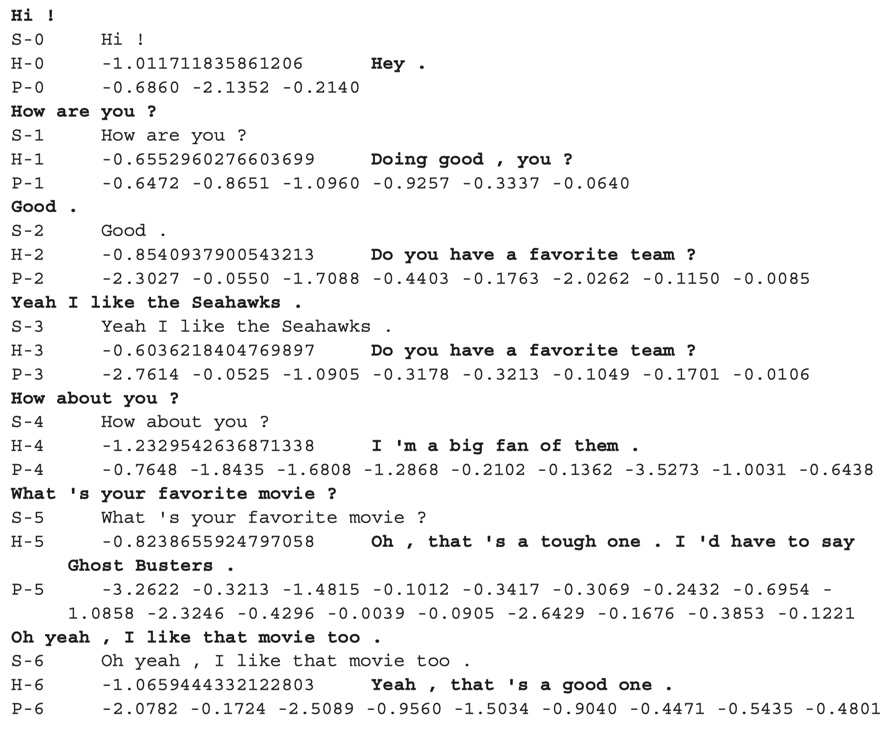

Everything is translation (Build a chatbot using attention and self-attention in fairseq)¶
Build a simple chatbot using NMT model¶
Chatbots are quite popular these days. Modern models can even tell corny jokes (like Google’s Meena).
If you followed the tutorial on build Neural translation model, you have actually learned the basics needed for building a chatbot. Surprising? Maybe not :) Actually, in a chatbot setting, it’s common to consider the question as the text to be “translated” and the answer as an translation.
The bitext is thus a file consisting of lines separated often by \t: the first item being the question and the last item the response.
For the sake of simplicity, I’m not going to review the essential concepts again, do read the previous tutorial and come back here if there are some terms appearing cryptic to you.
Just like NMT task, it’s common to have two files, one for the questions and another for the answers. If we use the translation terminology, the questions are fr (foreign) and the answers are en (English, since early translation systems mostly translate to English).
[2]:
!head data/dialog/selfdialog.valid.tok.fr
Hey .
Hi .
Are you a fan of the Star Wars series ?
Yeah love them .
Me too .
Cool .
Who is your least favorite character ?
Without a doubt Jar Jar Binks .
Oh man , same here .
I like this new trend of taking animated Disney movies and making them into live action movies .
[7]:
!head data/dialog/selfdialog.valid.tok.en
Hi .
Are you a fan of the Star Wars series ?
Yeah love them .
Me too .
Cool .
Who is your least favorite character ?
Without a doubt Jar Jar Binks .
Oh man , same here .
Absolutely hate him .
Me , too . I trust Disney to do it right .
The preprocessing step (convert raw texts to a binary format) is identical to the NMT task:
[8]:
!cat ./src/dialog/preprocess.sh
fairseq-preprocess \
--source-lang fr \
--target-lang en \
--trainpref data/chatbot/selfdialog.train.tok \
--validpref data/chatbot/selfdialog.valid.tok \
--destdir data/chatbot-cp \
--thresholdsrc 3 \
--thresholdtgt 3
The training part is very similar too. It is worth noting that although the building block used here is lstm, the whole architecture actually comprises an attention mechnism.
[9]:
!head src/dialog/train.sh
fairseq-train \ data/chatbot-bin \
--arch lstm \
--share-decoder-input-output-embed \
--optimizer adam \
--lr 1.0e-3 \
--max-tokens 4096 \
--save-dir data/chatbot-ckpt
The inference part is the same. Here we used a beam width of 5 (if 1 then it is equivalent to greedy search).
[10]:
!head src/dialog/inference.sh
fairseq-interactive \ data/chatbot-bin \
--path data/chatbot-ckpt/checkpoint_best.pt \
--beam 5 \
--source-lang fr \
--target-lang en
Et voilà! You built your first dialogue system :) 
So what is attention¶
Remember in the previous tutorial, we briefly talked about the main drawback of a vanilla seq2seq2 model. The input (a sentence or a text) is encoded into a single vector regardless of its length, resulting in a loss of information.
If we think about how a human translates a sentence, it’s often the case that human translators don’t remember the sentence and use a static internal representation to produce translations. Actually, he will often look back to the original text in order to focus his attention on the relevant parts at each time step.
Suppose the text to translate is “Le chat cherche de la nourriture désespérément” in French, a human translator would start by translating “the cat”, focusing his attention on “Le chat”. Then he will maybe put his focus on the word “désespérément” and output “desparately”. Finally he will shift his attention back to “cherche de la nourriture” meaning “look for something to eat”.
The approach of searching for the relevant part at each time step is not possible using the single vector encoding. So instead, Bahdanau et al. comes up with a clever solution which consists in taking all the hidden states of a RNN structure. The input now is a list of vectors (each vector represents a token). Besides, at each time step of the decoder (translation), a context vector is compared against the vectors from the encoder to detect the most useful tokens to pay attention to. So for each time step of translation, the decoder has access to a different, weighted representation of the input text!
For more details, see
Bahdanau, D., Cho, K., & Bengio, Y. (2016). Neural Machine Translation by Jointly Learning to Align and Translate. ArXiv:1409.0473 [Cs, Stat]. http://arxiv.org/abs/1409.0473
And the self-attention ?¶
The attention mechanism is designed to tackle the issue of the single vector representation. However, it is still facing another problem: long-range dependence. As a sentence’s length increases, it would be more and more difficult to “remember” relations between different elements inside a sentence.
For instance, in the sentence “The neighbor is not here today because of the vacation, that’s why his cat keeps meowing.”. It is very difficult for a RNN unit to know that his is related to the neighbor since too many words lie between these two phrases. However, a simple rule like his is always related to the nearest human pronoun should work.
In another words, this kind of random access is more efficient than the linear access way of RNNs.
On a higher level, one could say that the context vector is the inputs themselves. So this form of attention is called self-attention, the use of the latter in encoder and decoder has led to a new neural network architecture called transformer. The use of transformer and transfer learning in a variety of nlp tasks has enabled researchers to achieve new scores on leadboards.
In order to understand the implementation of self-attention (for example the exact architecture comprises multi-head attention aiming at capture richer linguistic representation). It may be useful to consult the two following sources:
How to use self-attention in fairseq?¶
The nice thing about fairseq is that it implements and provides already many sota model architectures including transformer. Also fairseq makes it really smooth to use multiple GPUs.
To use the transformer architecture, just change the --arch lstm to --arch transformer. You can ignore the hyperparameters because the choice of the latters is irrelevant here.
[11]:
!head src/dialog/train_transformer.sh
fairseq-train \
data/chatbot-bin \
--arch transformer \
--share-decoder-input-output-embed \
--optimizer adam --adam-betas '(0.9, 0.98)' --clip-norm 0.0 \
--lr 5e-4 --lr-scheduler inverse_sqrt --warmup-updates 4000 \
--dropout 0.3 --weight-decay 0.0 \
--criterion label_smoothed_cross_entropy --label-smoothing 0.1 \
--max-tokens 4096 \
--save-dir data/chatbot-cp-transformer
Conclusions¶
That’s it :) You know how to build a simple chatbot right now. Next time we will talk about how to use NMT models to implement Grammatical Error Correction (GEC) and especially, how the whole architecture can be used to produce noisy texts (texts containing errors).
Stay tuned :)